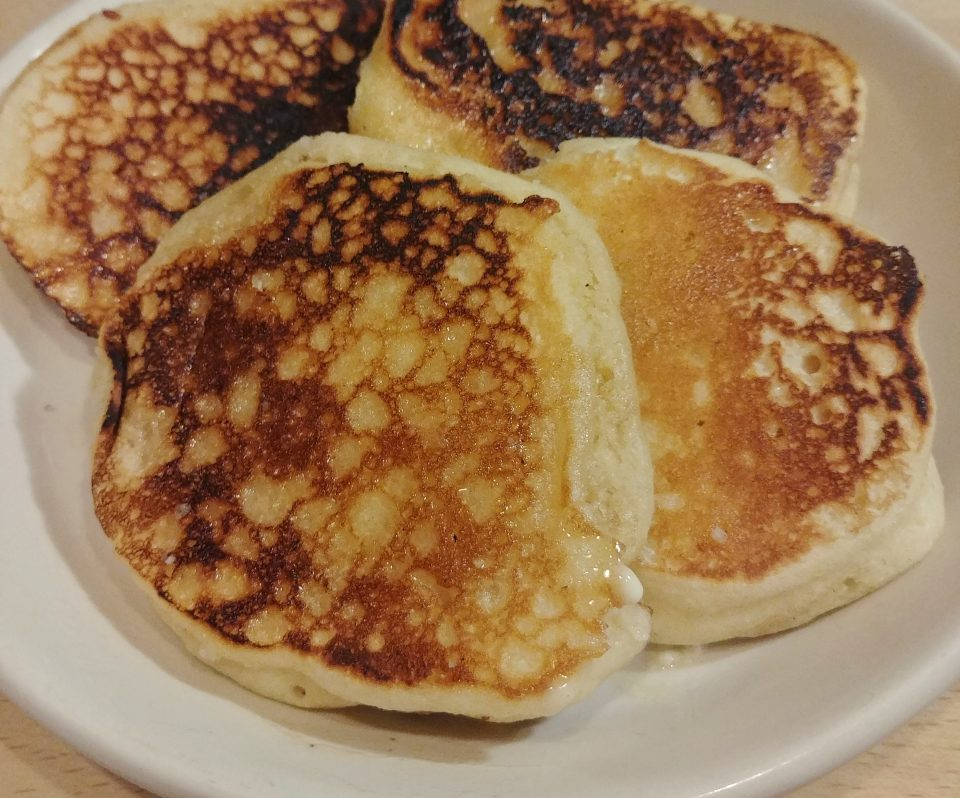
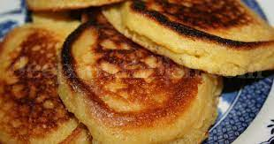

MF DOOM: Hoe Cakes

Source: Frank Davis (bushwickgrillclub.com)
Cornmeal pancakes fried in butter or oil and served whatever way you want
This is part of Frank Davis' Cooking The Album project inspired by "Hoe Cakes" from MF DOOM's MM..FOOD
Ingredients
- 2 eggs
- 1 cup (128 grams) flour
- 1 cup (120 grams) cornmeal
- 2 1/2 Teaspoons (10 grams) baking powder
- 2 tablespoons (28.12 grams) sugar
- 1 teaspoon (5.69 grams) salt
- 3/4 cup (128 grams) milk
- 1/2 cup (236.59 gram) water
- 1/3 cup (75 grams) melted butter
- Butter or oil for frying
Directions
Preparing The Hoe Cakes
- In a large bowl, mix cornmeal, flour, sugar, baking powder, and salt
- In a small bowl, combine the eggs milk, water, and butter
- Make a well in the center of the dry ingredients, and pour in the milk-egg mixture
- Mix thoroghly until the batter is smooth
Frying The Hoe Cakes
- Heat a lightly oiled cast iron or frying pan over medium-high heat
- Scoop about 2 tablespoons each of the batter onto the pan
- Fry each hoecake until brown and crisp; turn with a spatula, and then brown the other side
Results

Remove and serve immediately with syrup and/or butter or sour cream or jam or bbq sauce and smoked meat or really whatever you can think up.
Return Home